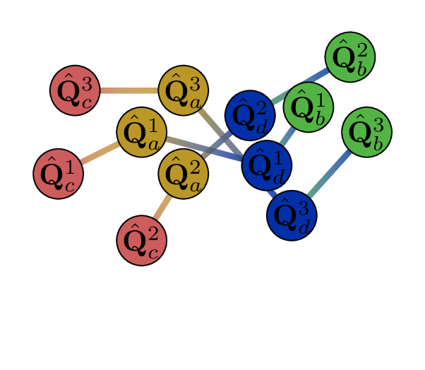

Mori-Zwanzig Formalism
The dynamics of coarse-grained (CG) variables follow:
- General framework from Mori-Zwanzig
- In practice: simple ad hoc approximations
- Memory oversimplification: under-explored
Ad hoc Approximations
In the Mori-Zwanzig formalism, the dynamics of the coarse-grained (CG) variables are unknown. Many existing models make simplifying approximations:
- Markovian-Pairwise
- \( \sum_{j} \mathbf{K}(Q_{ij}) \mathbf{V}_j . \)
- Non-Markovian Isotropic
- \( \int_0^t \mathbf{K}(t-s) \mathbf{V}(s). \)
- Non-Markovian Pairwise (NM-DPD)
- \( \sum_j \int_0^t \mathbf{K}(Q_{ij}, t-s) \mathbf{V}_{ij}(s) \, ds. \)
- 🚀 Non-Markovian Manybody (Our Model)
- \( \bm{\Xi}(\mathbf{Q}) \int_0^t e^{- \bm{\Lambda} (t-s)} \bm{\Xi}(\mathbf{Q})^T \mathbf{V}_{ij}(s) \, ds, \)
Important New Issues
-
To accurately model many-body dynamics, our neural network must respect physical symmetries:
-
Translation Invariance:\(\mathbf{\Xi}(\bQ_1 +\mathbf{b},\cdots,\bQ_M +\mathbf{b}) = \mathbf{\Xi}(\bQ_1,\cdots,\bQ_M)\)
-
Rotation Symmetry: \(\mathbf{\Xi}_{ij}(\mathrm{U}\bQ_1,\cdots,\mathrm{U}\bQ_M) = \mathrm{U}\mathbf{\Xi}_{ij}(\bQ_1,\cdots,\bQ_M)\mathrm{U}^T\)
- Permutation Symmetries: \(\mathbf{\Xi}_{ij}(\bQ_{\sigma(1)},\cdots,\bQ_{\sigma(M)}) = \mathbf{\Xi}_{\sigma(i)\sigma(j)}(\bQ_1,\cdots,\bQ_M)\)
-
Translation Invariance:\(\mathbf{\Xi}(\bQ_1 +\mathbf{b},\cdots,\bQ_M +\mathbf{b}) = \mathbf{\Xi}(\bQ_1,\cdots,\bQ_M)\)
- Extensive
\(\mathbf{\Xi}\)( , , )
| Ξ11 | Ξ12 | Ξ13 |
| Ξ21 | Ξ22 | Ξ23 |
| Ξ31 | Ξ32 | Ξ33 |
\(\mathbf{\Xi}\)( , , )
| Ξ11 | Ξ12 | Ξ13 |
| Ξ21 | Ξ22 | Ξ23 |
| Ξ31 | Ξ32 | Ξ33 |
Neural Network Representation
- Introducing coordinate feature \(\hat{\mathbf Q}^k_i\): \( \hat{ \mathbf Q}^k_i = \mathbf{Q}_i \oplus \sum_{l\in\mathcal{N}_i} f^k(|\mathbf{Q}_{il}|)\,\mathbf{Q}_{il} \)
- Compute the distance on the feature: \( \hat{\mathbf{Q}}_{ij}^{k} = \hat{\mathbf{Q}}_i^{k} - \hat{\mathbf{Q}}_j^{k} \)
- Construct the state dependent part of the memory kernel: \( \boldsymbol{\Xi}^n_{ij} = \sum_{k=1}^K h_{n,k}(\hat{ \mathbf Q}_{ij}^T \hat{ \mathbf Q}_{ij}) \hat{ \mathbf Q}_{ij}^k \otimes \hat{ \mathbf Q}_{ij}^k \)


Numerical Result
\[ C^{xx}(t; r_0) = \mathbb{E}[\mathbf{V}_i(0)\cdot\mathbf{V}_j(t) \vert Q_{ij}(0) = r_0] \]
| Model | Temporal | Spatial |
|---|---|---|
| M-DPD | Markovian | Pairwise |
| NM-GLE | Non-Markovian | Isotropic |
| NM-DPD | Non-Markovian | Pairwise |
| NM-MB | Non-Markovian | Manybody |
Numerical Result
\( G(r, t) \propto \frac{1}{M^2} \sum_{j\neq i}^M \delta(\Vert \mathbf{Q}_i(t) - \mathbf{Q}_j(0)\Vert - r) \).
| Model | Temporal | Spatial |
|---|---|---|
| M-DPD | Markovian | Pairwise |
| NM-GLE | Non-Markovian | Isotropic |
| NM-DPD | Non-Markovian | Pairwise |
| NM-MB | Non-Markovian | Manybody |
Numerical Result
normalized correlations of the
Transverse Hydrodynamic Modes
\[ \begin{split} C_T(t) &= \langle \tilde{u}_2(t)\tilde{u}_2(0)\rangle \\ \tilde{\mb u} &= \frac{1}{M}\sum_{j=1}^M \mb V_j {\rm e}^{i\mb k \cdot \mb Q_j} \end{split} \]
| Model | Temporal | Spatial |
|---|---|---|
| M-DPD | Markovian | Pairwise |
| NM-GLE | Non-Markovian | Isotropic |
| NM-DPD | Non-Markovian | Pairwise |
| NM-MB | Non-Markovian | Manybody |
Numerical Result:reverse Poiseuille flow
Numerical Result: Vortex flow
Stochastic Control: Representative Benchmarks
压缩来看，这一部分的结果覆盖了全局优化、解析可验证的随机控制模型，以及 model-free 强化学习任务。
Benchmark Summary
- Rastrigin: Adam-CBO 显著提升高维多峰函数上的成功率，稳定维度可扩展到 \(10^2\!-\!10^3\)。
- LQG / Ginzburg–Landau: 学到的控制与理论最优控制高度一致，说明方法不仅能“找到低损失”，也能恢复正确结构。
- Path planning / RL: 在多智能体避障、Pendulum-v1、CartPole-v1 等任务上，不依赖显式梯度也能得到有效策略。
Main Message
- 相较标准 policy gradient，CBO 类方法用“群体搜索 + 随机探索”规避了高方差梯度估计。
- 相较传统 HJB / DP，它不需要状态空间网格，因此更适合高维控制。
- 这给出了一条从全局优化到 stochastic control、再到 RL 的统一 gradient-free 路线。


未来工作：机器学习驱动的基于场的多尺度建模与算法
-
Non Fourier heat conduction
-
Fourier Law
\( u_t = \kappa \Delta u \)
Limitation:- Linear Approximation
-
Temperature cannot close the dynamics by itself
Reason: High temperature coexist multiple phases
Solution: Steinhardt order parameters as phase variables into dynamics.
-
Fourier Law